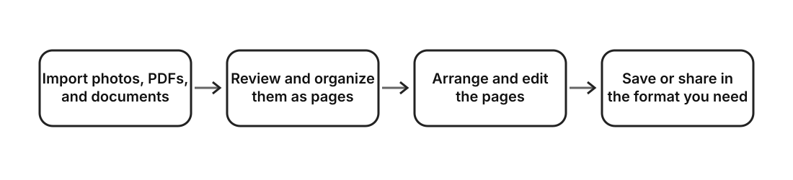

Sort & Done!
Photos and PDFs, in the order you need.
Import photos, scans, PDFs, and supported documents as pages, arrange them freely, and export them as PDF or images.
App screens
Import, arrange, refine, and export
Import
Add photos, files, scans, PDFs, and supported documents as pages. Large imports include progress and cancellation.
Arrange
Use drag and drop, multi-selection, the workspace and tray, and undo or redo.
Refine
Rotate, crop, adjust color, correct documents, place pages on paper, and compose layers.
Export
Export as PDF, JPEG, PNG, transparent PNG, or save images to the photo library.
Supported documents become independent pages
DOCX, XLSX, and PPTX files are not converted with full Microsoft Office layout compatibility. The app reads useful content such as text, tables, sheets, and slides and creates its own pages for review and rearrangement. Export the source as PDF first when visual fidelity is essential.
Local processing first
The app uses no account, advertising, analytics SDK, or tracking SDK. Projects and OCR results are not automatically sent to a developer server, and AI handoff files are not uploaded until you choose a destination.
Privacy Policy →Every feature is free
All features remain available for free. Optional support purchases let people support continued development, but do not unlock features or content.
See how it works
One page workspace across file formats
Photos, PDFs, and documents become common pages that can be reviewed, organized, and saved or shared in the form you need.

More detailed Mermaid diagrams will be available on GitHub when the source repository is published.
Ask an AI about Sort & Done!
This text guide contains a Japanese source and English reference covering features, supported formats, limitations, privacy, and essential developer information.
Give the file to an AI and ask in your preferred language. Follow the official links in the guide for current information.
Download AI information guideSupport
View supportParticipate through GitHub
Bug reports, improvement and feature proposals, translation corrections, and code contributions are welcome and may support ongoing quality and maintenance.
As an independently maintained project, a reply, investigation, adoption, implementation, or fix cannot be guaranteed for every submission. Do not post personal, confidential, or authentication information.